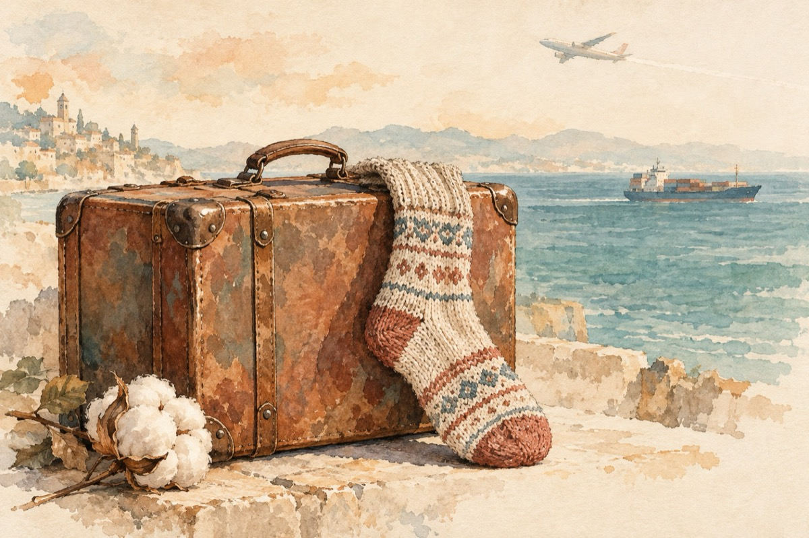

Colo-n fabrică
Colo-n fabrică la noi
Am scăpat de griji și de nevoi
Bagi bumbac și iese lână
Situația e bună!
Și cu asta ,,basta”!
Dar problema este alta
Ca să ai acest bumbac
Este bătaie de cap.
Și de cap dar și de muncă
Până la tine s-ajungă!...
Mai întâi de căutat
Acolo unde-i plantat.
Și pe urmă țin-te frate,
Noi aici, el e departe.
Mai înoată, mai și zboară,
Pân’ aici la noi s-apară!...
Deci copile, ia aminte
Un ciorap la-ncălțăminte
De la noi din fabrică
A străbătut lumea-ntreagă.
Dacă te gândești; în fine,
El e mai turist ca tine!
Vasile Groza